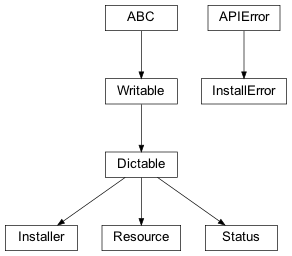

zensols.install package¶
Submodules¶
zensols.install.download¶
Downloads files with a progress bar.
Inspired by this thread.
-
class
zensols.install.download.Downloader(use_progress_bar=True, skip_if_exists=True, mkdir=True, tqdm_params=<factory>)[source]¶ Bases:
objectA utility class to download a file and (optionally) display a progress bar as it downloads.
-
__init__(use_progress_bar=True, skip_if_exists=True, mkdir=True, tqdm_params=<factory>)¶ Initialize self. See help(type(self)) for accurate signature.
-
zensols.install.installer¶

API to download, uncompress and cache files such as binary models.
-
exception
zensols.install.installer.InstallError[source]¶ Bases:
zensols.util.APIErrorRaised for issues while downloading or installing files.
-
__module__= 'zensols.install.installer'¶
-
-
class
zensols.install.installer.Installer(resources, package_resource=None, base_directory=None, sub_directory=None, downloader=<factory>)[source]¶ Bases:
zensols.config.dictable.DictableDownloads files from the internet and optionally extracts them.
The files are extracted to either
base_directoryor a path resolved from the home directory with name (i.e.~/.cache/zensols/someappname). If the~/.cachedirectory does not yet exist, it will base the installs in the home directory per theDEFAULT_BASE_DIRECTORIESattribute. Finally, thesub_directoryis also added to the path if set.Instances of this class are resource path iterable and indexable by name.
- See
-
DEFAULT_BASE_DIRECTORIES= ('~/.cache', '~/', '/tmp')¶ Contains a list of directories to look as the default base when
base_directoryis not given.- See
- See
-
__init__(resources, package_resource=None, base_directory=None, sub_directory=None, downloader=<factory>)¶ Initialize self. See help(type(self)) for accurate signature.
-
base_directory: pathlib.Path = None¶ The directory to base relative resource paths. If this is not set, then this attribute is set from
package_resourceon initialization.
-
property
by_name¶ All resources as a dict with keys as their respective names.
-
downloader: zensols.install.download.Downloader¶ Used to download the file from the Internet.
-
get_singleton_path(compressed=False)[source]¶ Return the path of resource, which is expected to be the only one.
-
package_resource: Union[str, zensols.util.pkgres.PackageResource] = None¶ Package resource (i.e.
zensols.someappname). This field is converted to a package if given as a string during post initialization. This is used to setbase_directoryusing the package name from the home directory if given. Otherwise,base_directoryis used. One must be set.
-
property
paths_by_name¶ All resource paths as a dict with keys as their respective names.
-
resources: Tuple[zensols.install.installer.Resource]¶ The list of resources to install and track.
-
sub_directory: pathlib.Path = None¶ A path that is added to
base_directoryif set. Setting this is useful to allow for more directory structure in the installation (see class docs).
-
class
zensols.install.installer.Resource(url, name=None, remote_name=None, is_compressed=None, rename=True, check_path=None, clean_up=True, clean_up_paths=None)[source]¶ Bases:
zensols.config.dictable.DictableA resource that is installed by downloading from the Internet and then optionally uncompressed. Once the file is downloaded, it is only uncompressed if it is an archive file. This is determined by the file extension.
-
__init__(url, name=None, remote_name=None, is_compressed=None, rename=True, check_path=None, clean_up=True, clean_up_paths=None)¶ Initialize self. See help(type(self)) for accurate signature.
-
clean_up_paths: Sequence[pathlib.Path] = None¶ Additional paths to remove after installation is complete
-
property
compressed_name¶ The file name with the extension and used to uncompress. If the resource isn’t compressed, just the name is returned.
- Return type
-
is_compressed: bool = None¶ Whether or not the file is compressed. If this isn’t set, it is derived from the file name.
-
remote_name: str = None¶ The name of extracted file or directory. If this isn’t set, it is taken from the file name.
-
-
class
zensols.install.installer.Status(resource, downloaded_path, target_path, uncompressed)[source]¶ Bases:
zensols.config.dictable.DictableTells of what was installed and how.
-
__init__(resource, downloaded_path, target_path, uncompressed)¶ Initialize self. See help(type(self)) for accurate signature.
-
downloaded_path: pathlib.Path¶ The path where
resourcewas downloaded, or None if it wasn’t downloaded.
-
resource: zensols.install.installer.Resource¶ The resource that might have been installed.
-
target_path: pathlib.Path¶ Where the resource was installed and/or downloaded on the file system.
-